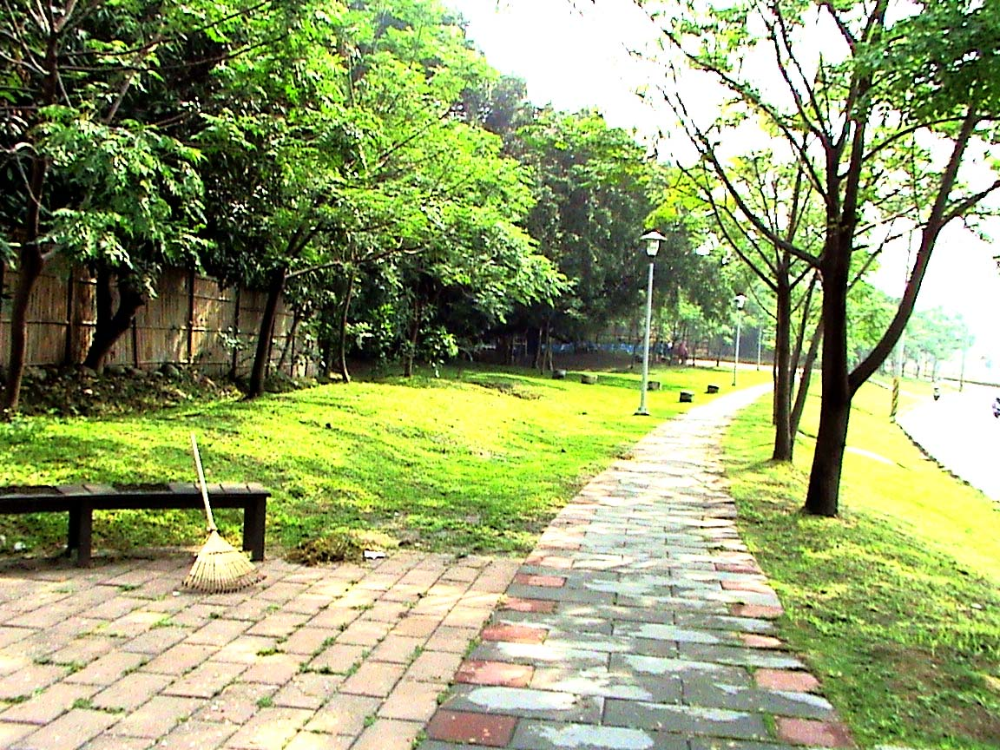
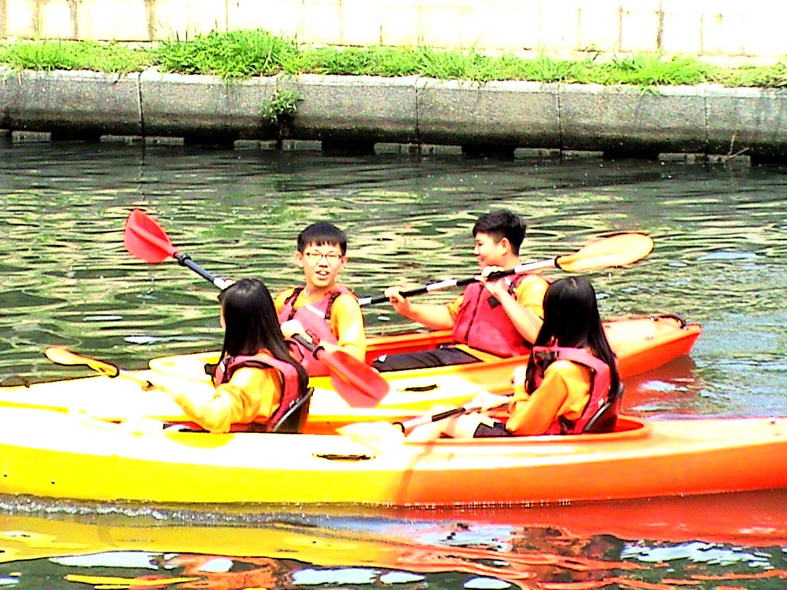
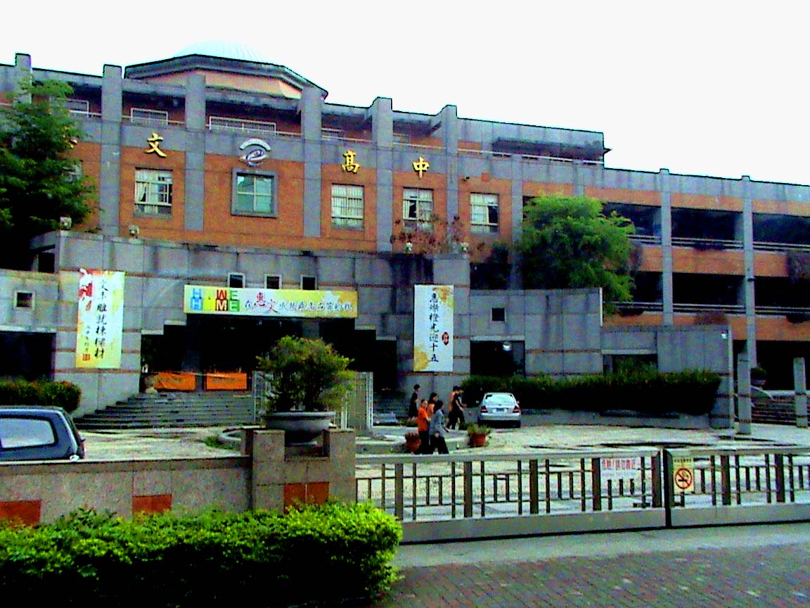
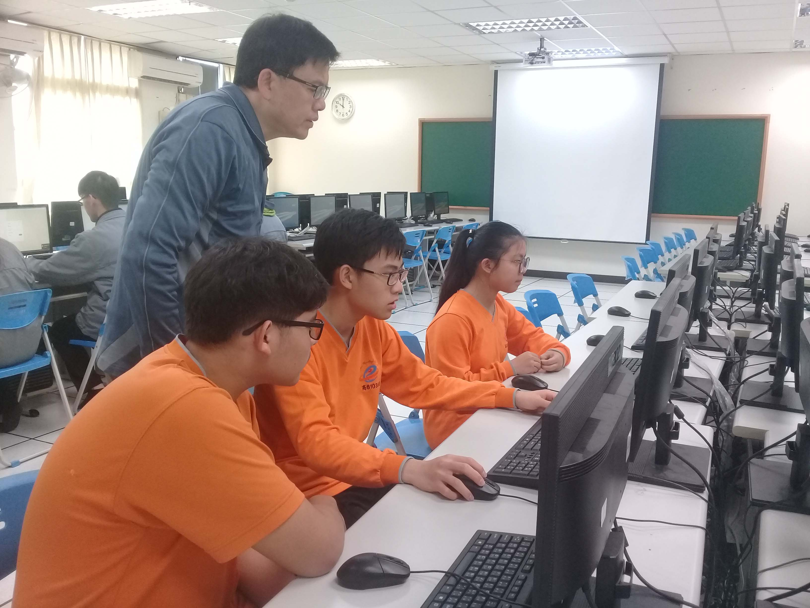
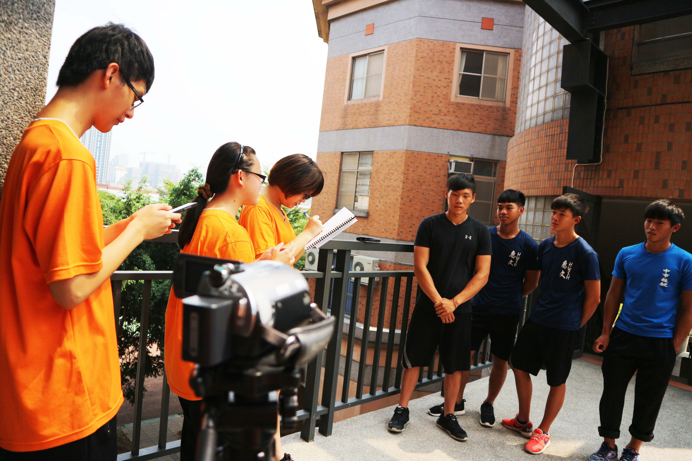

我們參加的網界博覽會類別:地方環境議題
地方社區描述
 圖片來源:Maps by Google Inc.
圖片來源:Maps by Google Inc.
康橋所在的位置是大里區的永隆里，永隆里是個安靜和平的社區，居民自發的組成 社區巡守隊來維持社區的整潔及安全。目前巡守隊人數持續增加中，在人數水漲船高的情況下，社區的品質會越來越好。
地方描述
圖片來源:自行拍攝從原本的死氣沉沉，到現在的生氣勃勃；從原本寥若晨星的遊客，到現在熙來 攘往的人潮，康橋已脫胎換骨，成為一個經過中興大學必去的熱門觀光景點。從前 康橋流域的水質為丙級、丁級，遭到工業、家庭廢水嚴重汙染；現在的水質改善甚 多，步道旁的草木蓊蓊鬱鬱，已經成為改革成功的另一個象徵。
專題描述
圖片來源:自行拍攝自輕艇隊的訓練開始，帶動康橋的整治計畫。從原本一條骯髒的小河，晉升成 學校輕艇隊的訓練場地和民眾的休憩場所。每一關的困難重重，從水利局局長一步 步的縝密計畫，到議員的大力推動，和里長的社區總體營造。現今一切的美好景物 ，歸功於這由大家同心協力所創造的環境。
專題研究計劃概要
圖片來源:自行拍攝康橋整治與自己學校輕艇隊憂戚相關，因此我們訪問了學校輕艇隊、光隆里長 、台中輕艇協會理事、第三河川局長、協助康橋整治的市議員，以及使用康橋遊憩 的市民。我們除了研究康橋整治，也探討台中市水文、汙水處理、親水環境建置、 與未來康橋的未來。這些資料都要呈現在網頁中，將康橋的成功經驗和感人的人文 故事傳播出去。
我們的網際網路環境
圖片來源:自行拍攝組員家中大多以ADSL寬頻網路的方式連線，學校電腦教室的電腦則是以光纖主 幹連接校內的電腦中心，流暢度及品質非常佳。這些提供我們查詢資料、製作圖表 、組員連繫、查詢網頁……等，由於擁有便捷的網路環境，使我們得以更加順利的 完成此次研究。
我們克服的難題
人物採訪部分
雖然組員中有兩位對於採訪較為熟悉，但其他人都尚在摸索階段，以致於之後 分開採訪的時候有過意見不合，或者不敢開口的狀況，所幸有老師的指導以及組員 們之間的加油打氣，最終我們仍是努力的完成了任務。
資料整理部分
在進行此次專題之前，組員們就已經以康橋為主題做過許多的作業，所以大家 對於康橋都有一定程度的了解。在經過採訪後，更理解整治案通過不為人知的小秘 辛，並且擁有了更加專業的水利知識。
網頁製作部分
除了平時繁忙的課業外，還要以生疏的技術製作一個網頁，實在是一項大挑戰 。但在隊員們的互相幫助與長時間的練習下，讓我們能夠製作出這個成品。
心得與目標
圖片來源:自行拍攝「要怎麼採訪？」「網頁要怎麼做？」一頭霧水的我們，開始學習許多過去沒 有嘗試過的事情，每一個第一次，就代表著我們的一種成長。
在製作這個專題時，我們學到要如何在訪談時，有禮貌且自然的與訪者交談， 與有效率及有計畫的安排每一件事情；更重要的，我們學會了感恩，了解到今日的 網民不能一味的當酸民，而不給認真的公僕鼓勵。當我們享有優美的公共建設時， 別忘了那是許多優質公民，以及公僕長久奮鬥的成果。
相信建置完這個網站後，我們必能藉由康橋的探訪，將更多良善的價值與治水 知識傳遞出去。